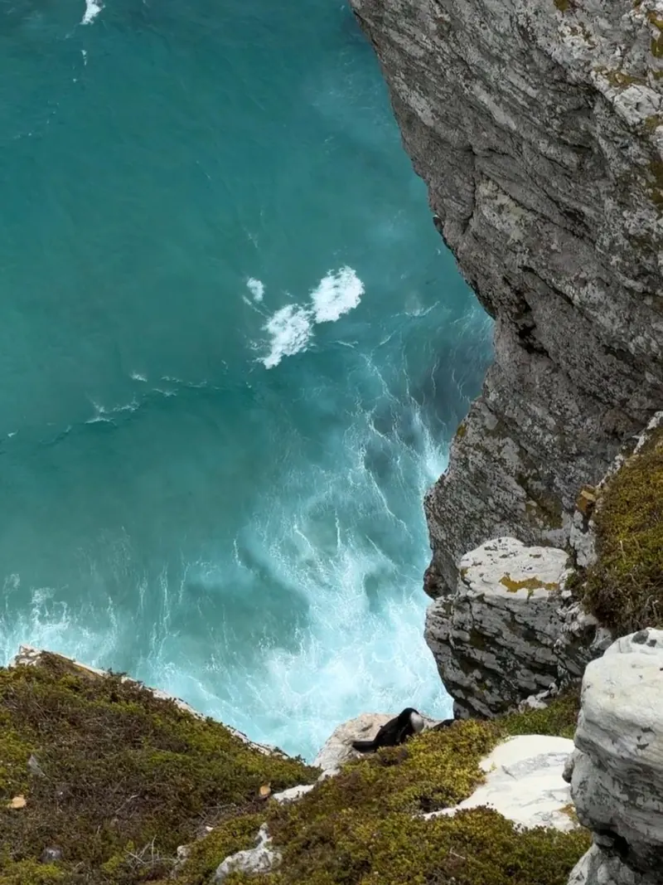
Край континента
Мыс Доброй Надежды, отвесные скалы и бирюзовая вода. Южнее только океан до самой Антарктиды.
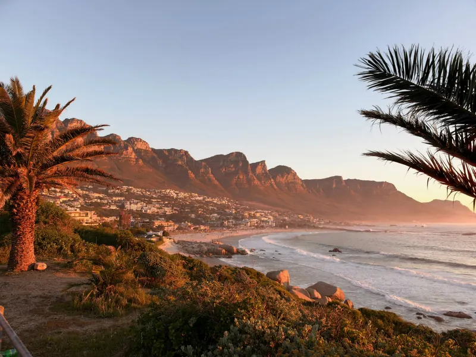
Авторский тур с pov.markiz
Африка, которую вы себе не представляли. Океан, горы и закаты на краю континента.
Кейптаун стоит между горами и океаном. Утром кофе с видом на Столовую гору, днём дорога над обрывом и пингвины на пляже, вечером закат над Атлантикой и ужин всей компанией на вилле.
За восемь дней мы увидим город с вершины и с палубы яхты, доедем до края континента, проведём день в винодельне среди гор и выедем на сафари к жирафам и львам. Без автобусов и толп: маленькая группа, свои машины и свой ритм.
Пингвины живут здесь по соседству с винодельнями, а саванна начинается в паре часов от пляжа. Одно из самых фотогеничных мест на планете.

Мыс Доброй Надежды, отвесные скалы и бирюзовая вода. Южнее только океан до самой Антарктиды.
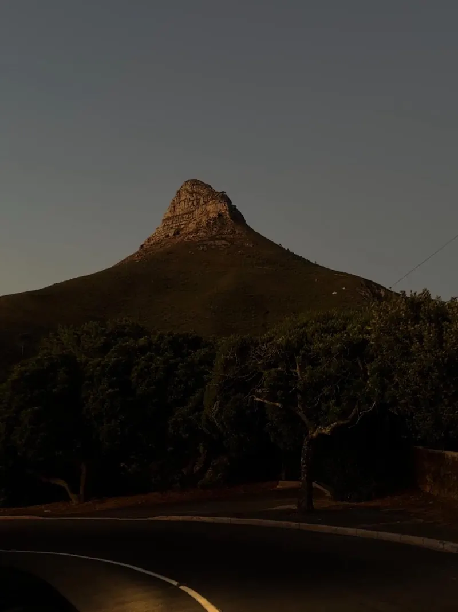
Столовая гора и Lion's Head видны почти отовсюду. Город буквально стоит у их подножия.
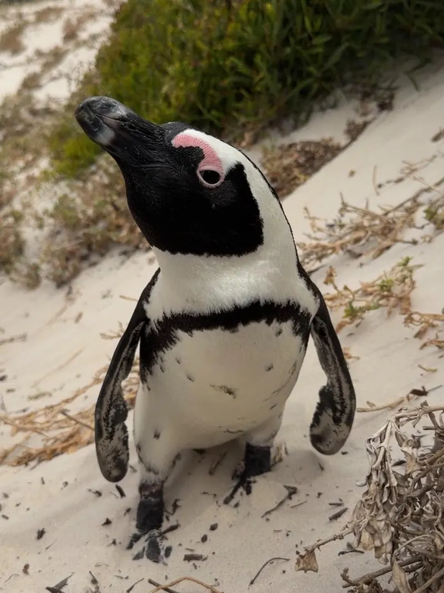
Африканские пингвины живут в получасе от центра и спокойно гуляют между людьми.
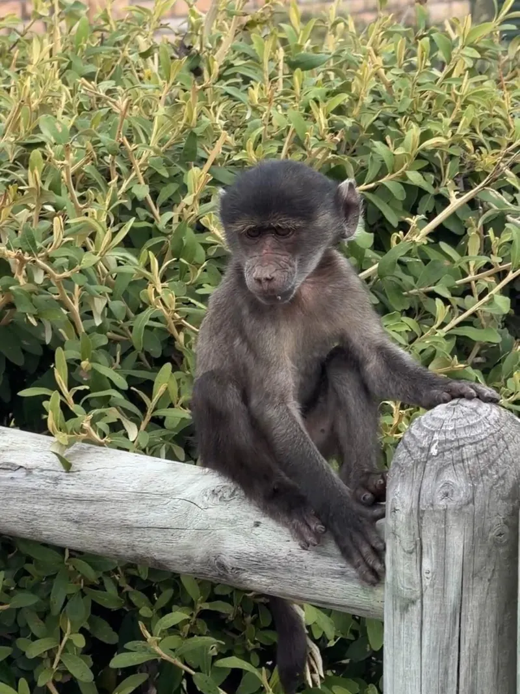
Бабуины на мысе, котики в гавани, дельфины у борта яхты. Всё это без поездки в джунгли.
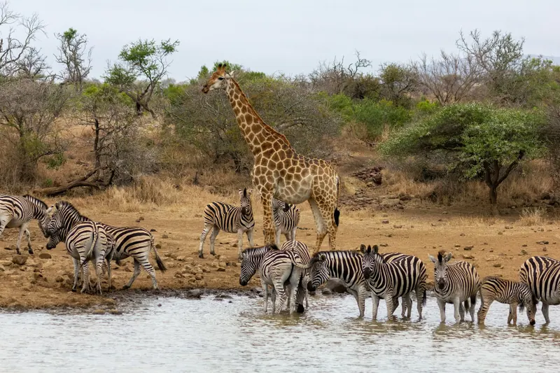
Жирафы, зебры, антилопы, львы и слоны. Никаких перелётов вглубь саванны.
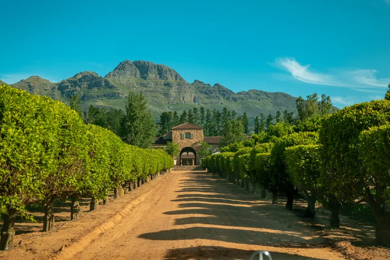
Винодельни-усадьбы с садами, скульптурами и видом на долины. Сюда прилетают ради одной дегустации.
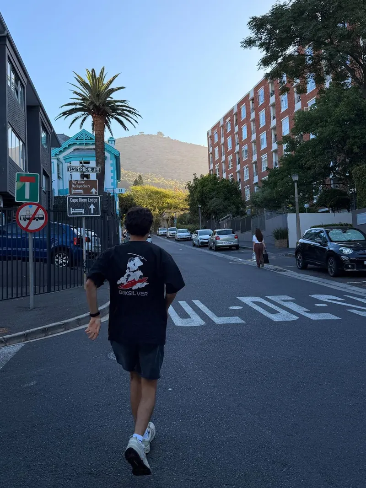
Виллы на скалах и тауншипы по соседству, 11 официальных языков и десятки культур. Кейптаун не похож ни на один город мира.
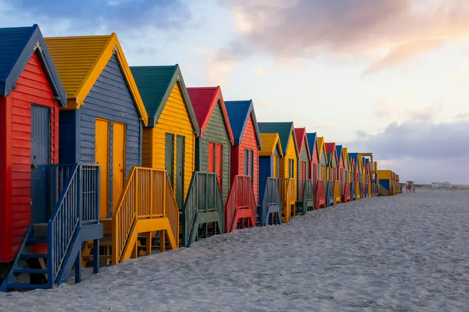
Пока дома зима, здесь +27 и солнце. Виза россиянам не нужна.
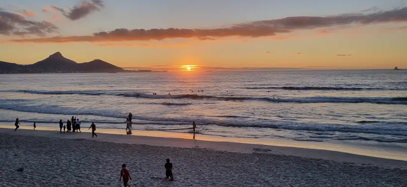
Sunset BeachВстречаемся, заселяемся на виллу и выдыхаем после перелёта. Вечером идём на пляж в паре минут от дома: мягкий песок, ветер и кайтеры над волнами.
Главное дня. Тихий закат на Sunset Beach, с которого начинается поездка.
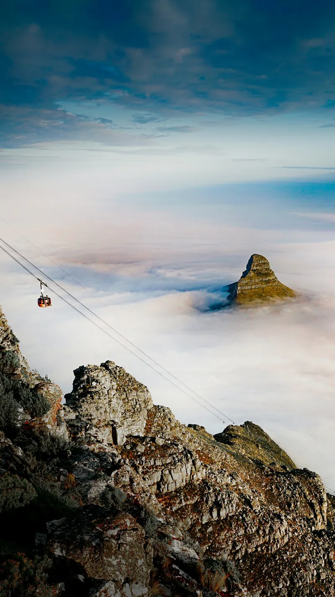
Sunset BeachПоднимаемся на Столовую гору по канатной дороге и смотрим на Кейптаун сверху: океан, пляжи, Lion's Head. Потом гуляем по цветным улицам Бо-Каапа, а вечером ужинаем в марине V&A Waterfront, среди яхт и старого порта. Здесь же у причалов живут морские котики, с ними обязательно познакомимся.
Главное дня. Вершина Столовой горы и знакомство с морскими котиками в порту.
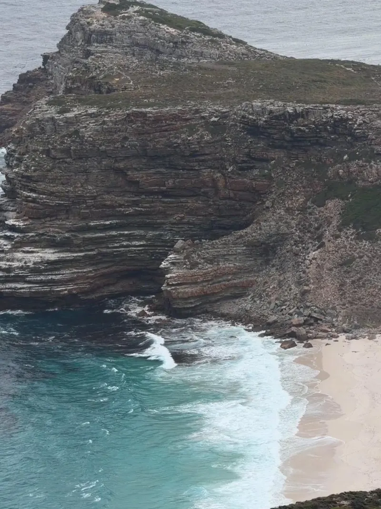
Sunset BeachЕдем по Chapman's Peak Drive: безумно красивая дорога, вырубленная в скале прямо над океаном. Дальше мыс Доброй Надежды, маяк, обрывы и бабуины. На обратном пути заезжаем на секретный спот к пингвинам: никаких заборов, они гуляют в метре от вас.
Главное дня. Пингвины на расстоянии вытянутой руки, мыс Доброй Надежды и бабуины.
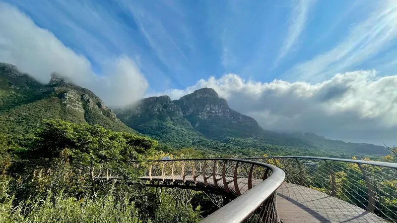
Sunset BeachУтром, пока свежо и мало людей, гуляем по Кирстенбошу, одному из самых красивых ботанических садов мира: протеи, финбош и изогнутый мост над кронами деревьев. Днём едем на тёплую сторону полуострова, в бухту Фолс-Бей, и купаемся в океанском бассейне Сент-Джеймс у разноцветных пляжных домиков. Вечером ужинаем в рыбацкой гавани Калк-Бей.
Главное дня. Мост «Бумсланг» над кронами и купание в тёплом океанском бассейне.
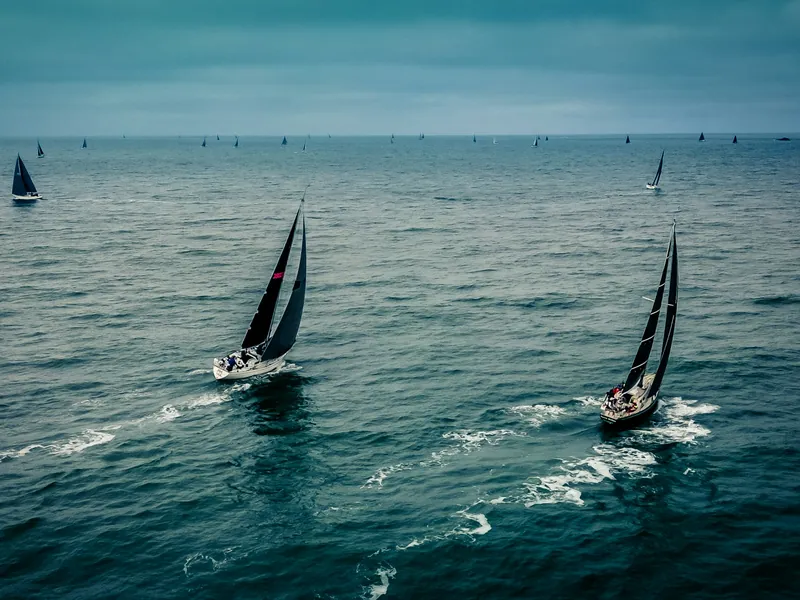
Camps BayПереезжаем во вторую виллу в Camps Bay. А потом главное событие дня: выходим на парусной яхте в открытую Атлантику. Ветер, крен и брызги, а с воды видно, как горы поднимаются прямо из океана. Рядом плавают котики, иногда подходят дельфины. Вечером первый закат в Camps Bay.
Главное дня. Яхтинг в открытом океане: паруса, ветер, котики и дельфины в паре метров от борта.
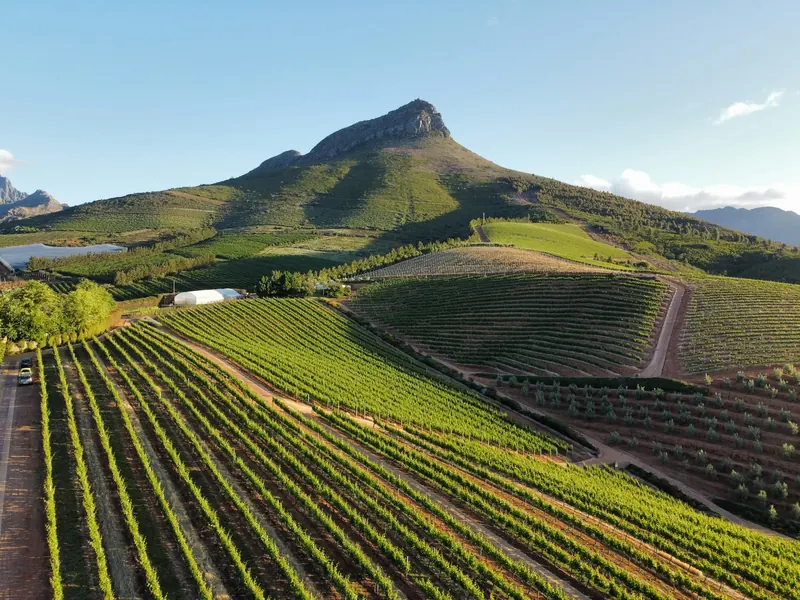
Camps BayЕдем в Стелленбос, в Delaire Graff Estate, одну из самых роскошных виноделен мира. Скульптуры, сады, террасы над долиной, дегустация и долгий обед с видом на горы. Здесь устраиваем большую фотосессию: много снимаем на камеру и запускаем дрон над виноградниками.
Главное дня. Обед на террасе с видом на всю долину Стелленбоса.
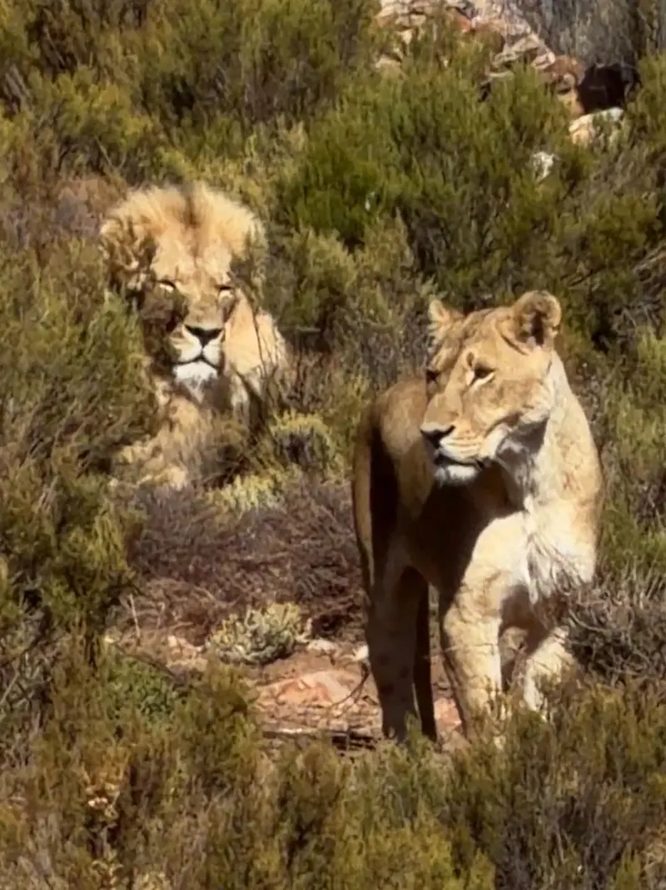
Camps BayУтром выезжаем в заповедник Aquila. На открытых джипах ищем львов, слонов, носорогов и буйволов, рядом пасутся жирафы, зебры и антилопы. Возвращаемся к закату.
Главное дня. Львы и слоны в нескольких метрах от джипа.
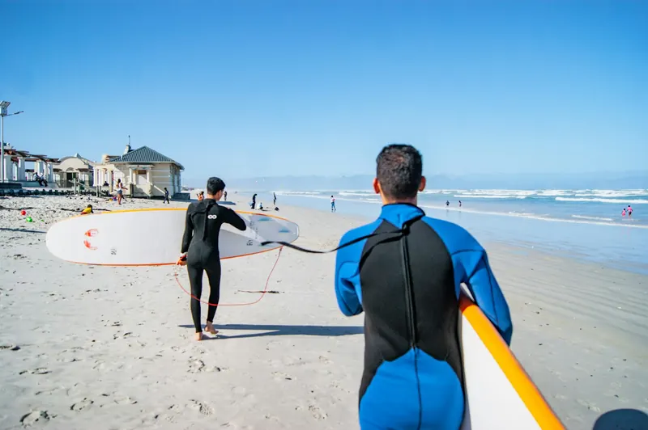
Camps BayПрощальный завтрак всей группой и разъезд. Если хотите задержаться, приглашаю вас со мной на серфинг в Muizenberg, где тёплая вода и мягкие волны для новичков, а вечером в казино GrandWest.
Главное дня. Первая волна на доске для тех, кто задерживается.
Маршрут гибкий: если погода или настроение подскажут лучший план, меняем дни местами.
Две виллы, потому что Кейптаун очень разный. Сначала тишина и пляж на севере, потом самый модный район у подножия гор. Так город раскрывается полностью. В обеих виллах живём по двое в комнате.
5–9 февраля, 4 ночи
Мой любимый район: тихий, безопасный, с длинным песчаным пляжем, где каждый вечер безумно красивые закаты и на волнах катаются кайтеры и виндсёрферы.
Вилла уединённая, с собственным садом и террасой. Идеальное место, чтобы познакомиться поближе и прожить первые дни спокойно и красиво.
9–12 февраля, 3 ночи
Самый богатый и красивый район города. Пляж в пяти минутах пешком, вокруг кафе и рестораны, а над головой горы Двенадцать апостолов.
Отсюда ближе всего до самых инстаграмных мест Кейптауна, а закаты над Атлантикой смотрим прямо с набережной.
Два автомобиля или большой минивэн. Останавливаемся там, где красиво, а не там, где положено.
Завтраки и часть ужинов готовим вместе на вилле, остальное время едим в кафе и ресторанах.
Снимаю на дрон, камеру Fujifilm и телефон. Фото и видео из поездки получают все участники.
Живём в самых спокойных районах, ездим на своих машинах, маршрут проверен лично. Ваша задача только наслаждаться.
Стоимость участия за одного человека, без перелёта.
По двое в комнате. Одна большая кровать без доплаты, две раздельные +150 €.
Предоплата 50% бронирует место. Остаток за месяц до поездки, до 5 января 2027.
Деньги возвращаются, если на ваше место найдётся замена.
Разгар лета. Днём обычно +25…28 и солнце, вечером прохладнее, часто дует ветер. Атлантика бодрящая, около +15, зато в бухте Фолс-Бей вода прогревается примерно до +20, там и купаемся.
Прямых рейсов из Москвы нет, летим с одной-двумя пересадками, например через Абу-Даби, Дубай, Стамбул или Аддис-Абебу. В среднем около 900 € туда и обратно. Помогу подобрать удобный вариант и состыковаться с группой.
Полностью. Живём в двух самых спокойных районах, передвигаемся на своих машинах, маршрут проверен лично. Я рядом всю поездку.
Российские карты в ЮАР не работают. Берите наличные доллары или евро и меняйте на рэнды на месте, либо карту зарубежного банка. Подскажу, сколько взять.
Нет. Гражданам России можно находиться в ЮАР без визы до 90 дней. Нужен загранпаспорт с двумя чистыми страницами.
Нет. Прогулки, пара несложных подъёмов и много красивых дорог. Справится любой, кто любит ходить пешком.
Мест всего 8. Напиши, и я расскажу всё, что не поместилось на эту страницу.
Расскажу детали и отвечу на первые вопросы.
Написать в TelegramПерелёт, размещение, бюджет, ожидания от поездки.
Перед бронированием проводим небольшую встречу. Это важный этап, который даёт понять, кто едет рядом и будет ли всем участникам комфортно друг с другом.
50% фиксируют место за тобой.

Организатор, автор блога @pov.markiz
Сертифицированный яхтенный капитан и путешественник. Уже несколько лет вожу небольшие группы в путешествия по Турции, Канарам, Мадейре, Японии, Африке и дальше.
По основной профессии я IT продакт-менеджер. Но однажды я заметил удивительную вещь: каким бы загруженным я ни был, путешествия всегда помогали выдохнуть и снова почувствовать вкус жизни. Так они и стали её неотъемлемой частью.
Эту поездку ведём вдвоём с @osssipskeka.
Я снимаю его на дрон, камеру и телефон. А сценарий складывается из мест, которые хочется показать: редких, настоящих, где бывали единицы.
Я за лёгкость, открытость и дружбу. После туров мы продолжаем общаться, видимся, снова едем куда-то вместе, помогаем друг другу, открываем новое и вдохновляем.
Неважно, едете вы в такую поездку впервые или уже не в первый раз. Вы обязательно найдёте здесь себя.
Главное — добро, которое мы несём в мир.
Если даты или направление не подошли, вот куда мы едем дальше.
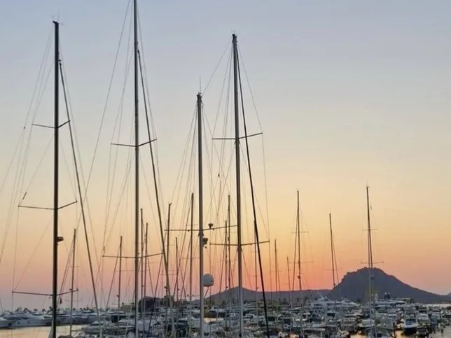
Неделя на яхте вдоль бирюзовых бухт
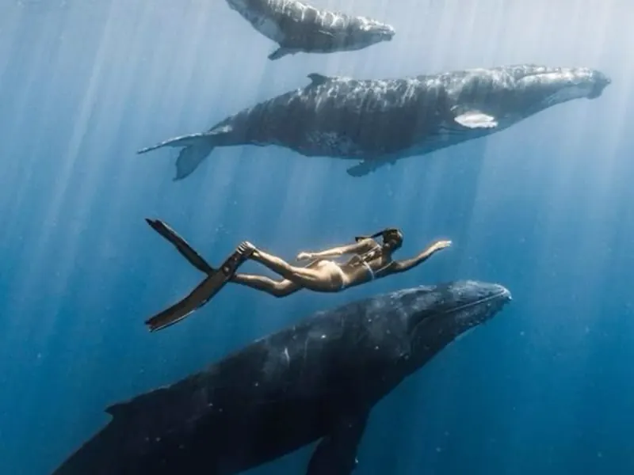
Вилла у океана, киты и гидросамолёт
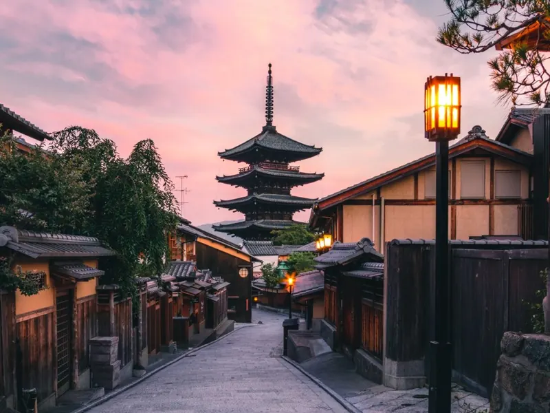
Храмы, рёканы и осенние клёны
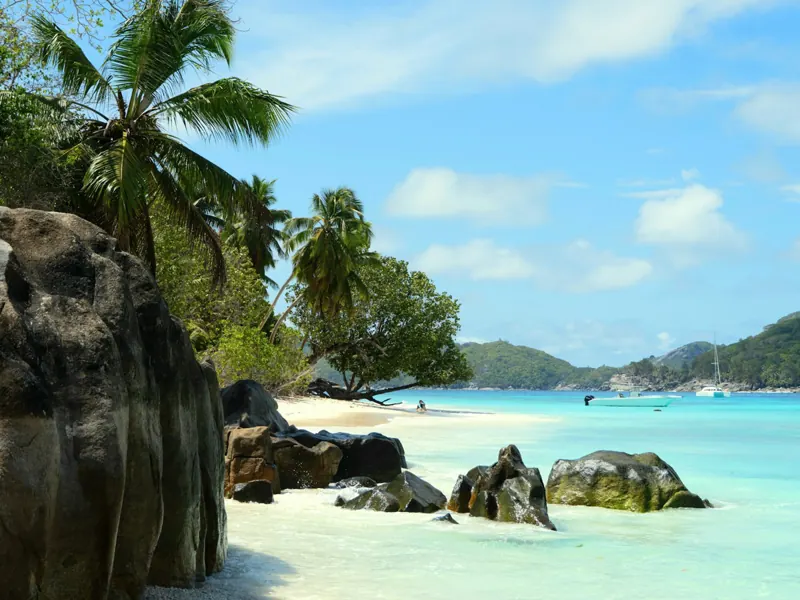
Новый год среди гранитных островов